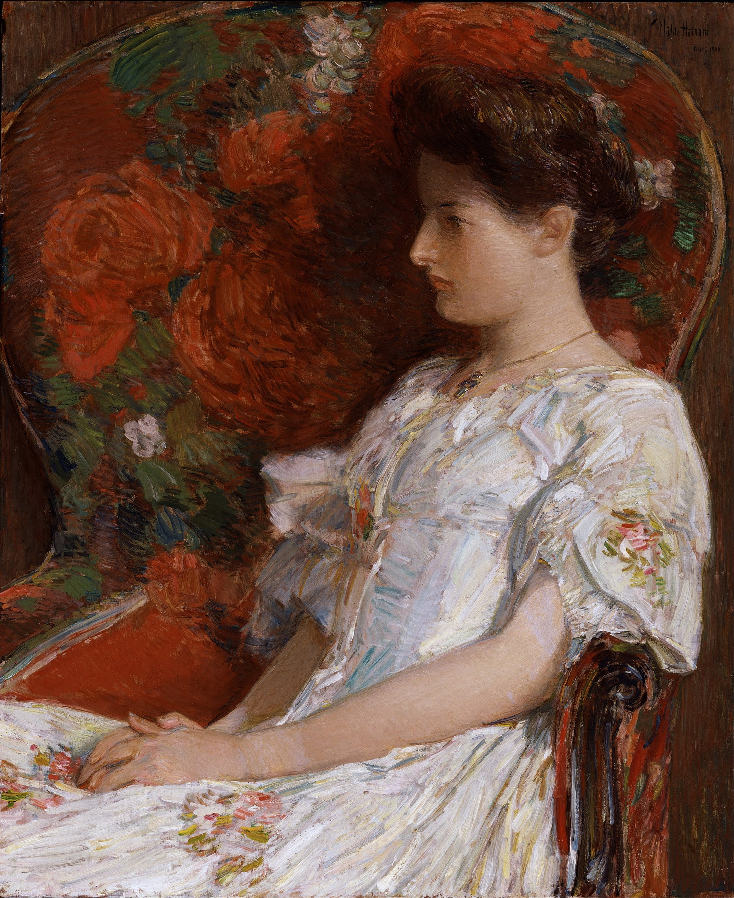

Other Artists
discover other impressionism artists
Edgar Degas
Three Dancers in Yellow Skirts, c. 1891
Edgar Degas was born Hilaire-Germain-Edgar De Gas (19 July 1834 – 27 September 1917) was a French Impressionist artist famous for his pastel drawings and oil paintings. Degas also produced bronze sculptures, prints and drawings. Degas is especially identified with the subject of dance; more than half of his works depict dancers.
Mary Cassatt
Mary Cassatt, self portrait
Mary Stevenson Cassatt (1844-1926) was an American artist who lived in France. Her paintings often focus on the social and private lives of women. Her mentor was Edgar Degas who was another impressionism pioneer. Edgar invited her to join the group of Impressionists at that time.
Berthe Morisot
Berthe Morisot, The Cage, 1885; Oil on canvas
Berthe Morisot was a French impressionism artist. She studied and leanred about plein-air painting. She focused more on the "feminine" qualities of her work such as intuitiveness, spontaneity, and delicacy.
Childe Hassam
The Victorian Chair by Childe Hassam
Frederick Childe Hassam was an American Impressionist painter, noted for his urban and coastal scenes. Along with Mary Cassatt and John Henry Twachtman, Hassam was instrumental in promulgating Impressionism to American collectors, dealers, and museums. He produced over 3,000 paintings, oils, watercolors, etchings, and lithographs over the course of his career, and was an influential American artist of the early 20th century.